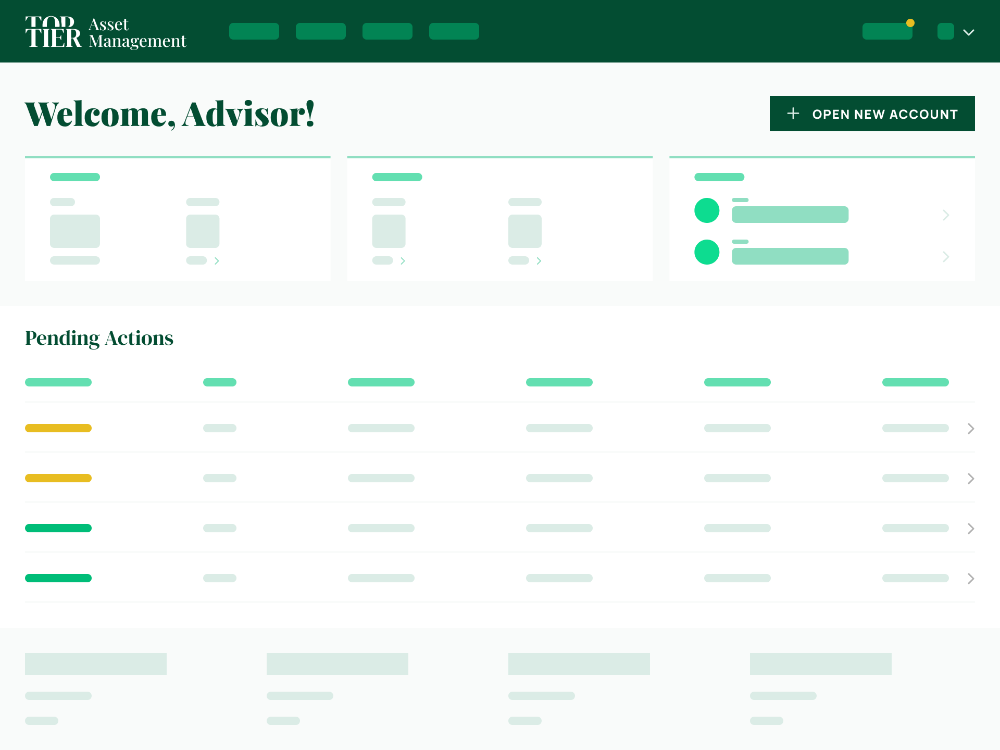
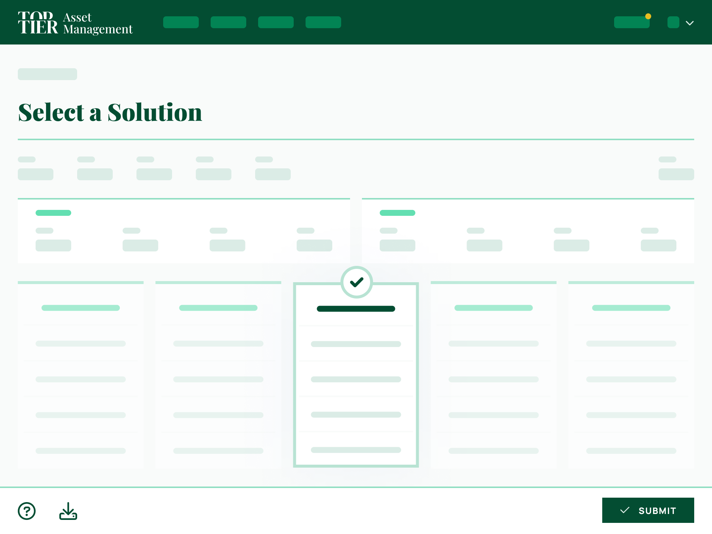
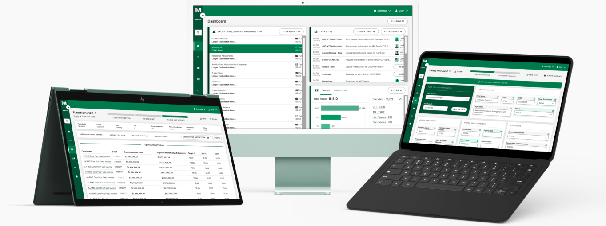

Product Designer · 13+ Years · NYC / NJ / Remote
Selected Work


Metrics reflect a mix of internal reporting and directional stakeholder estimates.
Primary designer for three new products and a year-defining initiative at a top-tier global investment bank, embedded through Publicis Sapient. Partnered with two engineering squads and multiple product managers across prospecting, onboarding, and account management.

Sourced from stakeholder estimates.
Led end-to-end experience strategy and complex workflow redesign for an internal funds management system at a major asset manager. Four legacy systems, hundreds of clicks per task, and high risk of costly errors — redesigned into a single, coherent platform.
About
For 13+ years I've designed regulated, high-stakes platforms across finance, cybersecurity, logistics, healthcare, and government. Currently embedded at a top-tier investment bank through Publicis Sapient.
Available for roles in NYC/NJ or remote. Contracts welcome.
Praise
He consistently raises the standard of the work around him. Ron is very easy to work with — collaborative, reliable. A great asset to any design team.
Ron operates above the ordinary in creating the most stylistic and functional user interfaces… He reimagined functionalities and proposed notable improvements to the activity flow.
He's a consistent top performer in everything UX… super productive with a great eye and an intellect that breaks IQ tests. Ron's curious, creative, a natural problem-solver, and a great team player.
Ron will challenge ideas or opinions that he knows won't work and is able to explain the whys. He is genuinely a super nice guy and a pleasure to work with.
Impact Highlights